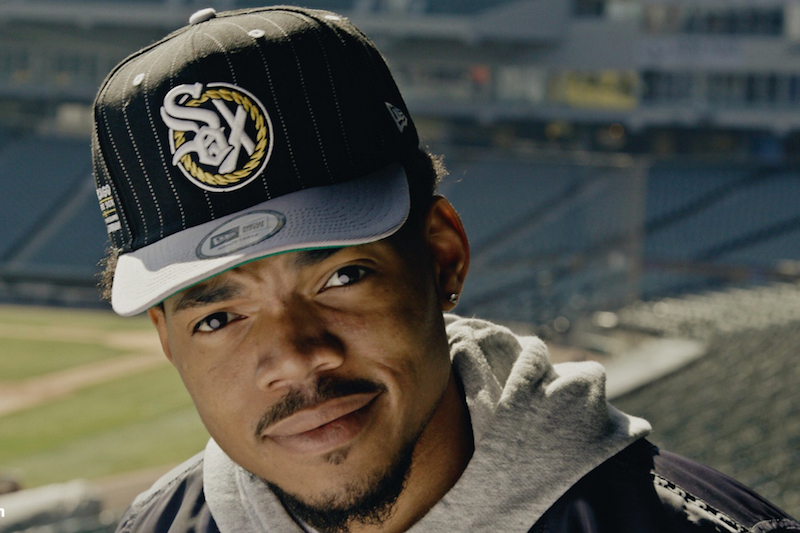

While Chance's fashion style is not a large part of his public image, he has taken interest in the industry. Chance has designed hats for the Chicago White Sox. The Hollywood Reporter has said that Chance is "redefining fashion" due to his style of generally wearing overalls and contesting traditional hip-hop fashion norms. Chance wore a suit that was meant to imitiate Michael Jackson at the 2017 BET Awards. Chance was seen wearing Thom Browne clothing at the 2017 Grammys.
